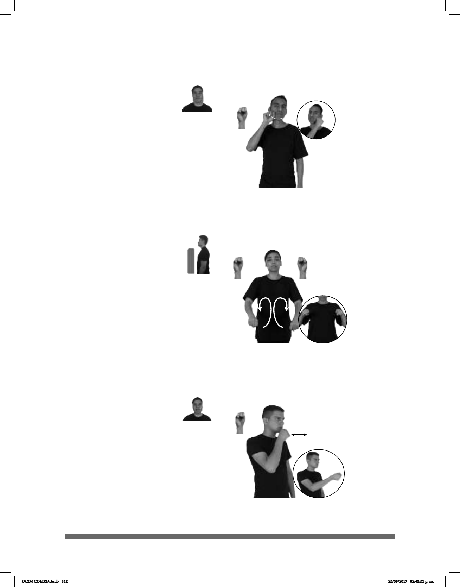

322
Seña: SM
S.1
: Palma hacia la izquierda.
Sobre las mejillas y la
barbilla.
La mano se mueve
formando un arco de una mejilla a otra
pasando por la barbilla.
Mandíbula
adelantada.
Simula la acción de
rasurarse.
sust. f. Máquina que sirve
para rasurar.
(S-85)
RASURADORA pro-YO QUERER COMPRAR
Quiero comprar una rasuradora.
(S-86)
Seña: SS
S.1
Palmas hacia abajo
A la altura del pecho.
Los brazos se mueven
formando círculos hacia atrás repetidamente.
Simula la acción de remar.
sust. m. Palo largo y delgado
que se ensancha en una de sus puntas (o en
las dos) y sirve para mover una embarcación
sumergiéndolo en el agua y empujando o
jalando de ella, generalmente haciendo
palanca sobre un punto de apoyo colocado
en la borda.
EJERCER-REMAR AYUDA CUERPO SANO
Remar es un ejercicio que ayuda a la salud.
(S-87)
pos-MI HERMANO #TV pro-ÉL REPORTERO
Mi hermano es reportero de televisión.
Seña: SM
S.1
Palma hacia la izquierda.
A la altura de la boca.
repetidamente.
Simula la acción de
entrevistar a alguien.
sust. Periodista que
informa sobre algún hecho desde el
lugar donde ocurre o que elabora un
reportaje.
DLSM COMISA.indb 322 25/09/2017 02:45:52 p. m.